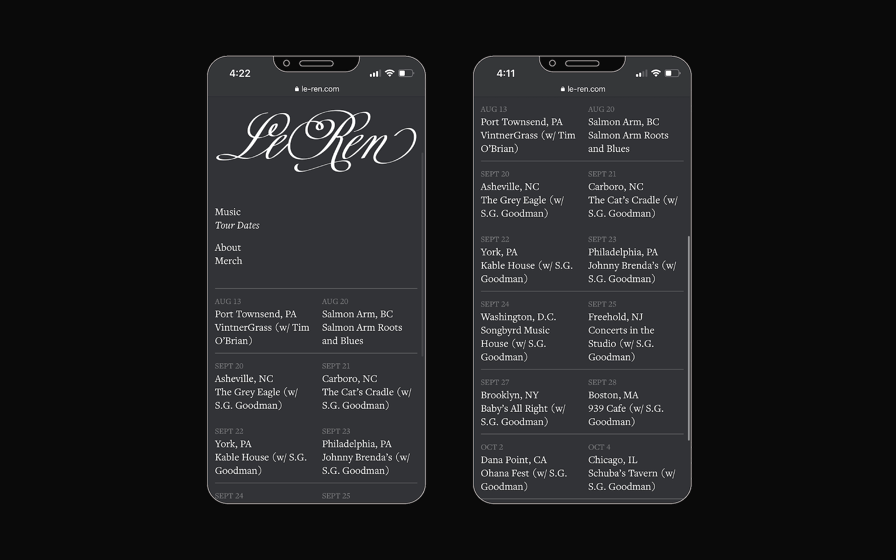
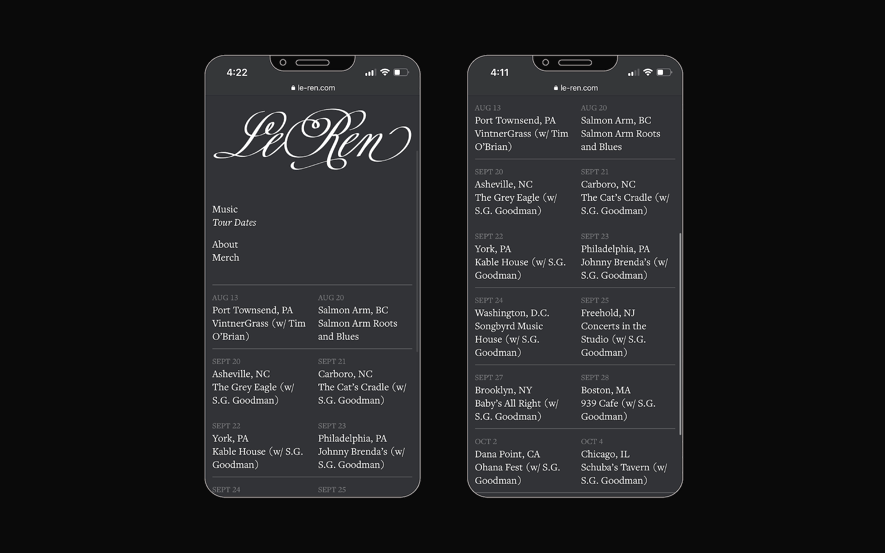

Money Has No Smell presents works by three artists: Ignacio Gatica, Mariana Parisca, and Gabriella Torres-Ferrer. Curated by ACOMPI (Jack Radley and Constanza Valenzuela) and mentored by Rosario Güiraldes, the exhibition brings together recent works that trace flows of currency to and from the artists’ places of origin, in the process addressing the complexity of globalized and interdependent financial systems.
The exhibition's identity co-opts the language of capital, acknowledging its staying power, ubiquity, and bizarre camp. Pinned beneath a labyrinth of vector art — pulled from cryptocurrency renders and flattened into a simulated watermark — lies the exhibition's logo, set in a typeface recognizable by its presence on NYPD's headquarters; Chilean government communications; and other emblems of capitalist authority. The accompanying catalogue, set in both orientations, asks the viewer to consider its content from multiple angles.
To learn more about Money Has No Smell and its artworks, visit CUE Art Foundation, a nonprofit that works to present varied perspectives in the arts.

 
